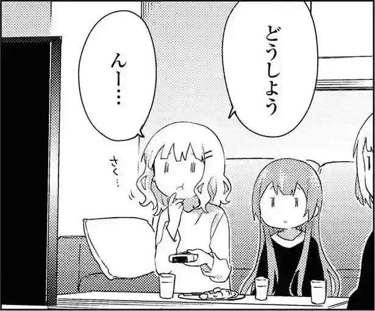

Mining from movies and TV-shows
Sentence mining is the process of picking sentences from your immersion and making Anki cards. Each sentence has one unknown piece of information, which is referred to as target word.
To mine sentences from movies and TV-shows
you are going to need the mpv video player,
and a plugin for mpv called Mpvacious.
MPV
mpv is the best video player for language learners.
It is fast, minimal, extensible and compatible with all video formats.
mpv is available on most distributions of GNU/Linux.
To install it on Arch Linux, execute the following command:
$ sudo pacman -S mpv
Make sure you have version 0.33.0 or later. If such a version is not available on your distribution, see here for different installation options.
MPV configuration
Start mpv at least once to create the config folder
which will be located at ~/.config/mpv/.
mpv reads its configuration from the following directories/files:
~/.config/mpv/mpv.conf. The main config file. Contains settings related to the player itself.~/.config/mpv/input.conf. Key bindings. Apart from the player's key bindings, it can also contain key bindings of third-party user-scripts.~/.config/mpv/scripts. Contains user-scrips. User scripts are small programs that extend the player's functionality. Usually each user-script is installed in its own folder.~/.config/mpv/script-opts. Config files used by the installed user-scripts. Some user-scripts don't have configuration files.
Note that not all the directories or files listed above are created automatically.
To configure mpv,
create and open ~/.config/mpv/mpv.conf.
This step is not strictly necessary.
Example configuration file
# Define language preferences
alang=ja,jp,jpn,japanese,en,eng,english,English,enUS,en-US
slang=ja,jp,jpn,japanese,en,eng,english,English,enUS,en-US
# mpv will resume where you left off when you reopen a media file
save-position-on-quit=yes
# Automatically use external subtitle files that contain the name of the media file
sub-auto=fuzzy
subs-with-matching-audio=yes
# Additional folders for storing subtitle files.
# You can drop all subs in the "subs" folder to keep files organized.
sub-file-paths=ass:srt:sub:subs:subtitles
# Subtitle font. Make sure the font you select is installed
# and contains all characters that are included in your subtitle files.
# https://archlinux.org/packages/extra/any/noto-fonts-cjk/
sub-font="Noto Sans CJK JP Regular"
# Change subtitle font size.
sub-font-size=40
# Uncomment this if you want mpv to override styles from SubStation Alpha (.ssa/.ass) subtitles
# sub-ass-override=force
# Improves audio when the playback speed is changed.
af-add=scaletempo2
# Screenshots
screenshot-directory="~/Pictures/Screenshots/"
screenshot-template="%F_%wHh%wMm%wSs%wTms"
screenshot-format=jpg
screenshot-jpeg-quality=90
screenshot-high-bit-depth=yes
Note:
To tell mpv to show subtitles in the font you selected in the config, press u.
If you want to make the setting permanent, add sub-ass-override=force to mpv.conf.
~/.config/mpv/input.conf contains key bindings.
For all available bindings, see /usr/share/doc/mpv/input.conf.
Example input.conf
# Increase / decrease subtitle font size
# Works only when sub-ass-override=force
# https://www.reddit.com/r/mpv/comments/dg5yzj/trouble_decreasing_subtitles_size/
/ add sub-scale +0.1
? add sub-scale -0.1
# Cycle video aspect ratios; "-1" is the container aspect
A cycle-values video-aspect "16:9" "16:10" "4:3" "2.35:1" "-1"
# Vim-like seeking
l seek 5
h seek -5
j seek -60
k seek 60
# Cycle between subtitle files
K cycle sub
J cycle sub down
# Skip to previous/next subtitle line (disabled - use Mpvacioius)
#H no-osd sub-seek -1
#L no-osd sub-seek 1
# Search sub-text on Jisho.org
# https://github.com/mpv-player/mpv/issues/4695#issuecomment-609876072
Ctrl+j run "/bin/sh" "-c" "xdg-open 'https://jisho.org/search?keyword=${sub-text}'"
# skip to next/previous file
> playlist-next
< playlist-prev
# Add/subtract 50 ms delay from subs
Z add sub-delay +0.05
z add sub-delay -0.05
# Adjust timing to previous/next subtitle
X sub-step 1
x sub-step -1
# Toggle OSD visibility
V script-binding visibility
Obtain content
Always download what you watch. This way it's easier to work with the files, make Anki cards, take screenshots, cut clips, make condensed audio, and so on. Don't use "services" that spy on you such as Netflix, Hulu, VRV, Funimation or Crunchyroll.
Attempts to create flashcards from streamed video files often fail. As a workaround, the user can record audio and take a screenshot manually, but it is not convenient at all.
Explore Immersion material to find Japanese content and Download tools for a ways to download it.
Obtain subtitles
To learn Japanese from visual content such as anime or jdramas, you need Japanese subtitles. Subtitles can be found on the Resources page.
I find that it's easier to download all the subtitles for all the shows and have them saved locally. This may require a few GiB of disk space, but it will save you the hassle of having to visit subtitle catalogs every time you need to find subtitles. For example, if you download the mirror of kitsunekko, you can use lf to browse it, and fzf to search it. Watch a demonstration on .
In the video,
I'm using a shell alias
to enter the directory with Japanese anime subtitles.
I'm also using keyboard shortcuts to call fzf and lf.
Shortcuts and aliases can be
configured in the .zshrc file.
# Change directory
alias subs='cd -- "/path/to/directory"'
# Ctrl+O to launch lf file manager.
bindkey -s '^o' '^ulf\n'
# Ctrl+F to search directory with fzf.
bindkey -s '^f' '^ucd -- "$(dirname -- "$(fzf)")"\n'
To create your own local mirror of kitsunekko,
use kitsunekko-tools.
This simple program downloads all files from kitsunekko
and saves them in a specified directory on your hard drive.
You need roughly 8 GiB on your disk
to store a copy of the entire subtitle catalogue.
If you can't find target language subtitles for a video, you can generate them using pyTranscriber. You're going to get cursed subtitles, but it's better than nothing. I have used it a few times for Japanese.
If you want to synchronize the subtitles, see Retiming subtitles.
Sometimes the only subtitle files
available for a particular video are image-based (.sup or .sub).
Often this is the case with subtitles for movies.
They don't contain any text and by themselves are not very useful.
SUP files can be converted to plain text (.srt)
using OCR (Optical Character Recognition) programs
such as subtitleedit.
Don't forget that if you have English subtitles enabled, at best you're going to improve your English, but your Japanese is not going to get any better.
User-scripts for MPV
mpv is highly configurable and extensible,
allowing users to customize its interface and functionality.
One way to do this is through user-scripts,
which are scripts that can modify mpv's behavior and add new features.
User-scripts are written in languages such as Lua or JavaScript.
You can find a list of user-scripts for mpv here.
Mpvacious
Mpvacious is a user-script for the mpv video player that allows you to make Anki cards while watching movies and TV shows in your target language.
Mpvacious can update Anki cards you add with Rikaitan by filling the audio and screenshot fields. Watch a demonstration on .
The user-script has a long list of features and configuration options. For details explore the documentation on GitHub. Below I'm going to write about how I use it.
Requirements
Mpvacious needs AnkiConnect to work. If you're using Xorg, xclip is required to copy text to the clipboard. wl-copy is required on Wayland.
Installation
Mpvacious can be installed with git:
$ git clone 'https://github.com/Ajatt-Tools/mpvacious.git' ~/.config/mpv/scripts/subs2srs
Configuration
Download the
example config file
and save it to ~/.config/mpv/script-opts/subs2srs.conf.
If you use the Note Type from the
recommended mining deck,
you don't need to change any settings at all.
If you don't, make sure to adjust at least the following variables:
sentence_fieldaudio_fieldimage_field
Usage
- Make sure Anki is running.
- Open a video in mpv.
- Press Ctrl+t to activate clipboard autocopy.
- Open GoldenDict or open your web browser and activate Rikaitan Search.
- Enable GoldendDict's "Scan Popup" or enable clipboard monitor in Rikaitan Search.
- When there is a word you want to mine, create a new card.
- Go back to the
mpvwindow and press Ctrl+m. If you want to grab a sentence that spans multiple lines, press a to open the advanced menu. Then mark the lines you want to appear on the card by pressing c and moving the position with Shift+h and Shift+l. Finish by pressing m. - The Anki Browser window should appear with the card updated.
See How to for more detailed explanations.
Creating cards without pausing
You can save sentences for later without adding definitions.
Since you don't have to pause to read the dictionary, this approach is less disruptive.
Press Ctrl+n to add the current subtitle line to Anki as a new card.
When you finish watching, open the Anki Browser and type added:1 to display cards added today.
Finally, add dictionary definitions to the cards.
If you want to create a card from multiple adjacent subtitle lines, do it using the advanced menu as described in the previous section.
Updating
To update Mpvacious, run the command below:
$ cd ~/.config/mpv/scripts/subs2srs && git pull
Should I use a "text hooker" page?
No.
Though you often see such recommendations, I think it unnecessarily complicates your setup. GoldenDict or Rikaitan Search can do the same thing simpler.